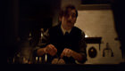
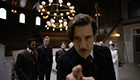
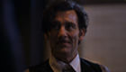
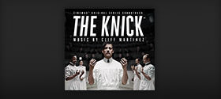
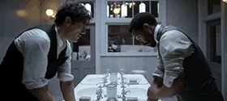

Featured
Episode 10 Preview
Episode 9 Preview
Post-Op: Episode 7
Post-Op: Episode 6

Post-Op: Episode 5

Post-Op: Episode 4

Post-Op: Episode 3
Season 2 Trailer
Extras
The Knick on Tumblr
The Knick on Facebook
The Knick on Twitter
The Knick Podcast
The Knick App
The Cast on Season 2

The Knick Soundtrack
TheBurnArchives.com

GIF Gallery
Michael Angarano Q&A
Eve Hewson Q&A
Clive Owen Q&A